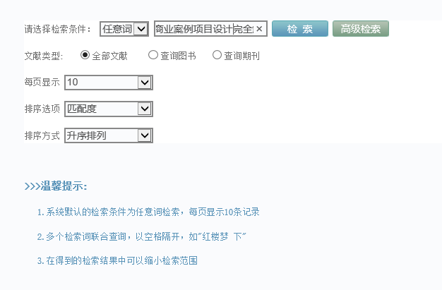
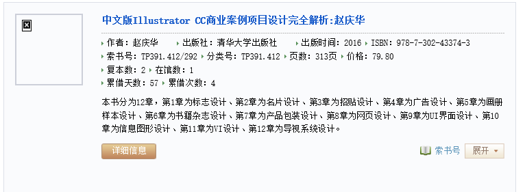
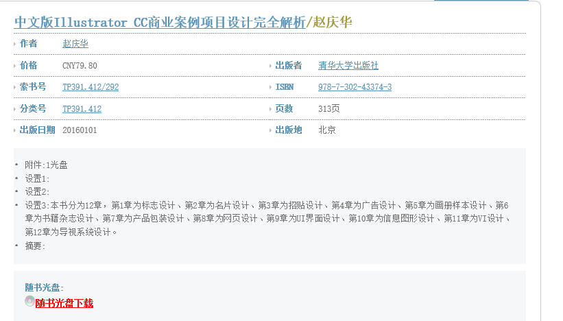
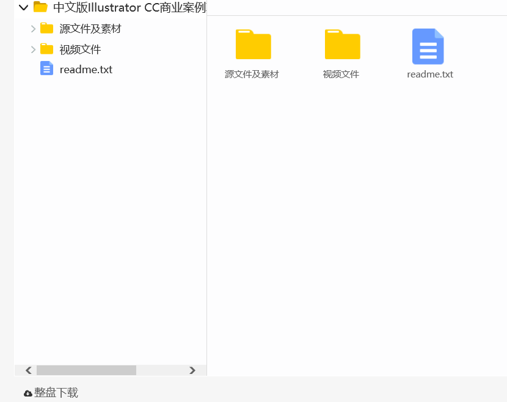
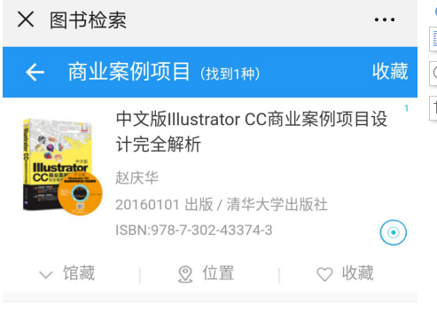
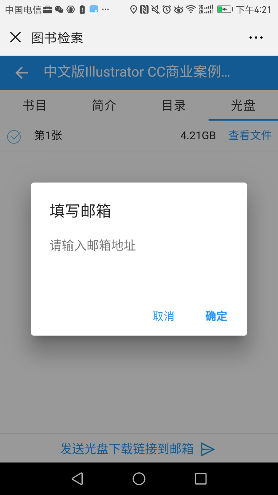

第一条信息
广州番禺职业技术学院图书馆简介
广州番禺职业技术学院图书馆位于风景秀丽的校园大门正前方,始建于1995年。在番禺区政府和港澳同胞的热情支持下,初建馆舍面积1万多平方米，楼高五层；2010年图书馆开始扩建，扩建后图书馆总面积达到3.07万多平方米，楼高六层。本馆除建有5个社会科学书库和1个自然科学书库外，还建有拥有200台电脑的多媒体电子阅览室1个，与外语外贸学院共建的外语多功能阅览室1个，同时，还建有中文报刊阅览室、工具书与过刊阅览室各1个和有900个座位的自修室1个，全馆阅览自修座位总数达4300多个。
本馆十分重视文献资源建设，除保证纸质图书建设外，电子资源也逐渐形成了拥有中外电子期刊、博硕论文、电子图书、专题数据库和特色数据库等多形式多类别的电子资源文献体系。截止到2018年8月,馆藏纸质图书123万余册、专业期刊约870种；数字资源量约20550GB，其中电子图书58万余册、电子学术期刊8360余种。
本馆积极采用现代化技术手段，全面实行信息化管理。采用ILAS自动化集成系统，进行采访、编目、流通、检索等全过程自动化管理；采用先进的图书监测系统，实现流通、阅览开放式管理。文学书库设有RFID读者自助借还系统；馆内设有触摸屏、电子公告屏、声视设备接口等公共服务设施；书目数据库和读者数据库采取OPAC“联机公共目录查询系统”查询，还建有图书馆微信平台和馆藏手机查询定位系统，使得检索快捷便利，极大地方便了读者了解图书馆信息、查询馆藏资源和借还图书。本馆网络信息资源实现24小时全天候开放，我校师生在校内外均可访问、检索、使用馆藏电子资源。
本馆设有办公室、流通部、信息技术服务部、采编部和信息咨询部5个部门。除开展常规的图书借阅服务和图书资源建设外，还开展了个性化的图书情报专题服务，为读者提供科技查新、查收查引、专业咨询、文献传递、课题信息情报检索等服务；同时，建立了专业馆员制度，每个二级学院和部分职能部门都有对应的专业馆员，帮助学校教职工充分利用图书馆文献信息资源，为教学和科研提供深层次服务。通过每年举办读书月系列活动，定期组织好书推荐和指导青山湖读书协会等多种方式，将图书馆的读者导读和阅读推广工作推向深入，营造了良好的读书氛围
第二条信息
广州番禺职业技术学院图书馆图书借阅规则
为加强图书管理，保证图书正常流通，充分发挥图书馆作为学校文献情报中心的作用，更好地为教学科研及全校师生员工服务，特制定本规定。
一、借阅数量及期限
学生限借6册(其中文学书限借2册)，借期为30天。 教职工限借12本，借期为90天。借期将满，可续借一次（借期增加30天），必须在图书到期前办理续借手续，否则作逾期处理。
二、图书借还
（一）图书借还流程
1.人工借还
（1）读者借书需持本人校园卡至总服务台，刷卡读取个人信息后将图书放置在图书借还机上，待工作人员操作完成后方可将图书取走；
（2）读者还书时，需至总服务台将所还图书放置在图书借还机上，待工作人员操作完成后方可离开。
2.自助借还（仅限二楼社会科学图书一）
（1）使用本人校园卡借还图书；
（2）将本人校园卡放置在自助借还机读卡区域读取卡号；
（3）触摸显示器选择相应借书或还书选项；
（4）将所借还图书书脊向下放置在V型图书放置区域后，点击确定完成图书借还；
（5）图书借阅成功后可以携带图书离馆；图书归还成功后将归还图书放置在自助借还机旁书车内后方可离馆。
（二）图书借还要求
1.完成借还手续，须过安全检测门离馆。
2.凡外借图书，必须在借书时限内如期归还。
3.如有图书逾期，图书馆将停止其借阅，待逾期图书还回并缴纳逾期罚款后，再恢复借阅。借书逾期不还者，按本馆有关规定处理。
4.读者所借图书在寒、暑假内到期的，可自动顺延至开学后一周内归还。
5.学生休学、退学或毕业离校；教职工离职、退休，必须清还所借图书方可办理离校手续。
6.读者必须爱护图书，不得在书上乱写、乱画、批点、涂抹、污损，不得遗失，严禁撕页或“开天窗”，如发现上述情况，借阅者需按图书馆有关规定办理赔偿手续。
7.读者借书时应检查所借图书，如有污损应当场向工作人员说明，同时要求在污损处加盖污损章，否则按损坏图书的有关规定处理。
8.丢失校园卡，应及时到财务处挂失，否则造成损失，由丢失者本人负责。
三、图书逾期、损坏、遗失处理办法
图书资料属于国有资产，师生员工借阅时应加以爱护，妥为保管。为保证大多数读者的权益，保护国有资产不受损失，对逾期、损坏或丢失等现象，按下列规定处理:
（一）逾期。未能在规定日期之前归还图书的，每册每超一天罚款0.10元，最高罚款上限为20元。
（二）损坏。损坏图书视损坏情况进行罚款处理。
（三）丢失。丢失成套图书其中1册或数册，应按全套书赔偿，当事人不得索取其他卷册。
具体处理方法如下:
1.赔书和加工费。即读者可购回相同图书（即书名、作者、出版社、出版年、ISBN号及价格相同的新书），经审核通过后可抵赔丢失图书，并缴纳5元图书加工费/册。
2.赔款。根据所丢失图书的情况，参考对照下列规定赔偿丢失图书价格的相应倍数（具体赔款倍数以系统生成为准）:
出版年限 20年以下 20-30年 30年以上
赔偿倍数 2倍 5倍 10倍
（四）说明
1.遗失的图书，必须在借期内办理赔偿手续；超过借期赔偿，超过天数按逾期天数处理，予以罚款。
2.赔偿手续办完后，如读者找回所丢图书，该图书归读者所有，本馆不办理退款手续。
3.校园卡遗失后,遗失者应及时挂失。在校园卡挂失前发生的因冒借图书而造成的后果,均由原持卡人负责。
4.款项的收取必须通过校园卡支付，不得收取现金。图书馆将收取的所有罚款和赔款如数上交学校财务处。
四、附则
本规定从发布之日起执行。原《广州番禺职业技术学院图书馆图书借阅规则》同时废止。
第三条信息
图书馆楼层布局及开放时间
| 序号 | 库室名称 | 楼层 | 开放时间 |
| 1 | 服务台 | 二楼 | 周一到周五 8:30—12:00 14:30—18:00 |
| 2 | 自修室 | 周一到周日 7:00—21:25 | |
| 3 | 电子阅览室 | 周一到周日 8:30—21:25 | |
| 4 | 中文报刊阅览室 | ||
| 5 | 社科书库（一） | ||
| 6 | 社科书库（二） | 三楼 | 周一到周五 8:30—12:00 14:30—18:00 |
| 7 | 社科书库（三） | ||
| 8 | 社科书库（四） | 五楼 | |
| 9 | 社科书库（五） | 六楼 | |
| 10 | 自科书库 | 四楼 | |
| 11 | 外语阅览室 | ||
| 12 | 工具书、过刊阅览室 | 五楼 | 周一到周五 8:30—12:00 14:30—17:00 |
注:为保证图书借还和库室清理等工作能在闭馆前办结，各库室工作人员会于闭馆前10分钟提醒读者离馆，请读者予以配合。
第四条信息
下载随书光盘的三个方法
一、电脑版
优点： 检索便捷，尤其对于含英文字母的书名。因为目前图书馆图书检索系统不太完善，有时候多一个空格少一个空格，或者大小写在手机上看不太清楚，不利检索。
网址：http://192.168.238.90/
1.登陆上述网址
2.输入书名

3.检索到图书后， 点“详细信息”

4.如果该图书配有光盘，点击“详细信息”后， 会显示“随书光盘下载”

5.点击“随书光盘下载”（注意，要拉到最下面， 点击“整盘下载”）

二、微信版
优点：随时随地，用手机便可操作。
方法一、通过“随书光盘检索”模块进行下载
图书馆微信：借阅服务---随书光盘检索
方法二、通过“图书检索”模块进行下载
图书馆微信：借阅服务---图书检索，检索到图书后，点光盘，就可以下载。
